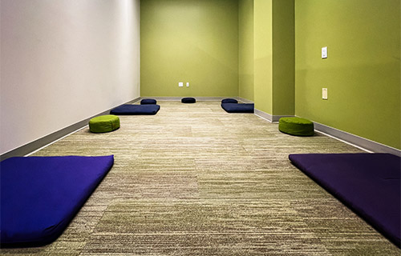
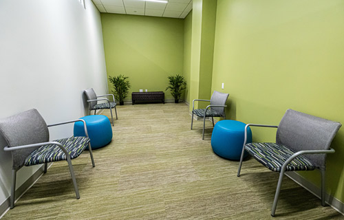
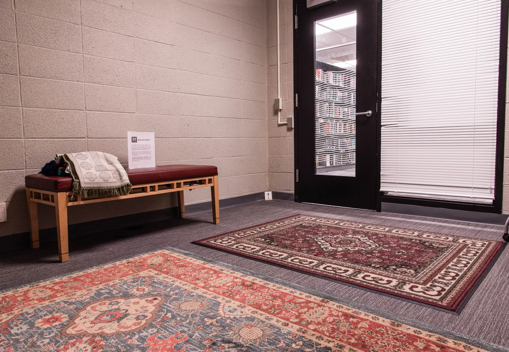

Meditation & Reflection Room
A space for stillness, reflection, and community well-being

Floor Mat Configuration
A purpose-built meditation room photographed in April 2025, arranged for seated or lying-down mindfulness practice. Six rectangular blue meditation mats are laid directly on carpet-tile flooring in two parallel rows of three, each paired with a small round green zafu cushion for seated posture support.
The room features a two-tone color palette: a warm sage-green accent wall runs along the left and far walls, while the remaining walls and ceiling are white, creating a calm, focused atmosphere. Neutral beige-grey modular carpet tile provides a soft, acoustically dampening floor surface. Recessed or flush ceiling lighting keeps the illumination even and glare-free. Wall-mounted light switches on the right wall suggest adjustable lighting for different practice needs.
Accessibility & space notes
The open floor plan allows flexible mat placement and can accommodate practitioners who require extra space or use mobility aids adjacent to a mat. The mats and cushions are removable, indicating the room is reconfigurable — compare with the September 2025 seating layout shown in slide 2. No permanent fixtures obstruct the floor space.

Seating & Reflection Configuration
The same meditation room photographed in September 2025, now arranged for seated reflection, small-group dialogue, or guided relaxation. Four grey upholstered armchairs with patterned seat cushions are positioned facing inward in a loose square, each paired with a teal round ottoman that provides a footrest or additional seating surface.
Two tall potted tropical plants are placed symmetrically in the back corners, softening the architectural lines and introducing a biophilic element. The same sage-green accent wall, white walls, carpet tile, and ceiling lighting from the April layout are unchanged, underscoring the room's consistent identity across its two primary configurations.
Reconfigurability & use notes
The contrast between this slide and slide 1 demonstrates that the room serves at least two distinct program modes: individual/group mat-based meditation and seated reflective or therapeutic conversation. The chair arrangement supports inclusive practice for those who cannot use floor mats. The ottomans double as additional seating when groups are larger than four.

Shapiro Reflection Room — Archival View
An archival photograph from April 2019 showing the Shapiro Reflection Room in its original configuration. The space occupies a utilitarian room with unpainted concrete block walls and grey commercial carpet, transformed into a contemplative environment through furnishings and textile layering.
Two large, ornate rugs — a deep red Persian-style medallion rug in the foreground and a complementary red-toned rug closer to the door — are layered directly on the carpet, anchoring the space and providing visual warmth against the raw concrete. A wooden-framed bench with turned legs sits against the left wall, holding a decorative floral pillow and a loosely draped textile blanket, inviting visitors to pause and rest.
A small informational placard is mounted on the wall above and to the left of the bench, likely providing guidance on using or booking the space. A glass-paneled door with horizontal window blinds occupies the right wall, and through it the compact shelving of a library collection is visible, situating the room clearly within a library or academic building.
Historical context & design notes
This 2019 image predates the dedicated meditation room shown in slides 1 and 2 by approximately six years, illustrating an earlier, lower-resource approach to creating reflective space: no specialist furniture, no acoustic treatment, no purpose-built layout — instead a quiet corner made welcoming through rugs, soft furnishings, and intentional curation. The contrast highlights the program's growth from an informal reflection corner to a fully equipped, reconfigurable wellness room.
Slide 1 of 3